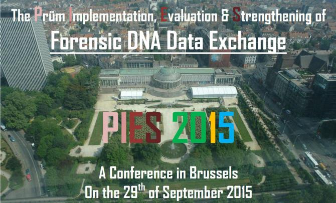

With the financial support of the Prevention of and Fight against Crime Programme
European Commission – Directorate-General Home Affairs
PROJECT #: HOME/2011/ISEC/AG/PRUM/4000002150
Forensic DNA databases are potential sources of high-quality cross-national intelligence for law enforcement and judicial purposes, through the inference that two matching genetic profiles found in two different locations originate from the same person.
However, despite the 2005 Prüm Treaty aimed at improving the automatic exchange of forensically-relevant data (such as genetic profiles) between 15 countries, the 2008 European Union legislation requiring all Member States to participate in this exchange framework, and the successful participation of numerous countries, full implementation proved more difficult than originally anticipated.
During this one-day conference, we will be presenting the final results of the PIES project, a European Commission co-funded project that aspires to stimulate the exchange of forensic DNA data under Prüm through several activities.
Participants include representatives of EU Member states, academics, policy makers, journalists and other interested parties (including civil society) having an interest in Prüm, Forensic DNA and judicial/law-enforcement cooperation.
In the morning, the members of the PIES project will present a synthesis of the results.
In the afternoon, discussions on the results will occur during three parallel sessions on the following topics: (1) the implementation of step 1 (the automatic exchange of DNA data), (2) the obstacles to and methods of Step 2 (the manual exchange of personal/ case data), (3) the criminology and criminal justice aspects of Prüm.
More information on the PIES project: https://nicc.fgov.be/PIES
registration deadline: 30 Juny 2015 EXTENDED TO: 17 July 2015
All necessary information (including the REGISTRATION FORM) is contained in this document: PIES_2015_conference.pdf
If you need to contact us, please use the following address: PIES@just.fgov.be.
Organizer:
Nationaal Instituut voor Criminalistiek en Criminologie (NICC)
Institut National de Criminalistique et de Criminologie (INCC)